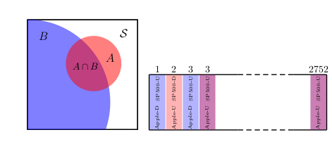
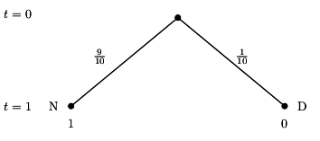

Chapter 3 Conditional Probability
3.1 Contingency tables
We begin this lecture with a definition and an example. Here is the definition:
- Contingency Table
- A contingency table shows counts of cases on one categorical variable contingent on the value of another for every combination of both variables.
Contingency tables are useful for calculating conditional probabilities as they contain all the necessary ingredients for the computation. The concept of conditional probability and its applications will be the main contents of this lecture.
Let us start with an example of a contingency table within the context
of stock price moves, we discussed already to some
degree in lecture 2. It gives me also an opportunity to point you to one
powerful R package, which will allow you to access financial data, quite easily for
yourself without me providing them to you with study material: The
tidyquant-package. You can check out the packages’s home page with documentation and
study material at: https://business-science.github.io/tidyquant/.
Remember from lecture 1 that we can install add-on packages for R, which extend the
functionality of the system by new functions. A packages has to be installed first and then
loaded into working memory. To install tidyquant let us first use the install command:
install.packages("tidyquant")
and then load the package by:
library(tidyquant)We do not go into the tidyquant package in any detail. If you are interested check out the github page cited above. For now we only show the use of one of its core functions which allows you to load financial data directly from the internet.
This function is called tq_get(). Let’s see how it works. We first
retrieve the S&P500 stock market index. To do this we need to know the ticker symbol, which is
^GSPC. This has to be passed to the tq_get() function and that’s it. Let us save these
data into an R object, which I call sp500and look at the first entries
sp500 <- tq_get("^GSPC")
head(sp500, n = 5)## # A tibble: 5 x 8
## symbol date open high low close volume adjusted
## <chr> <date> <dbl> <dbl> <dbl> <dbl> <dbl> <dbl>
## 1 ^GSPC 2011-01-03 1258. 1276. 1258. 1272. 4286670000 1272.
## 2 ^GSPC 2011-01-04 1273. 1274. 1263. 1270. 4796420000 1270.
## 3 ^GSPC 2011-01-05 1269. 1278. 1265. 1277. 4764920000 1277.
## 4 ^GSPC 2011-01-06 1276. 1278. 1270. 1274. 4844100000 1274.
## 5 ^GSPC 2011-01-07 1274. 1277. 1262. 1272. 4963110000 1272.We see that the series starts March 2011. Now let’s retrieve the stock price data of Apple beginning at 2011-01-03, the same day as the index data.
apple <- tq_get("AAPL", from = " 2011-01-03")You can give a beginning date to the argument from in the tq_get() function (you can guess
that you can also give an end data to as an argument to tq_get)
For the contingency table we would like to count the number of days when the S&P was moving up from one day to the next and how often it was moving down. We would like to do the same with the Apple stock price.
One way to see whether the price moved up or down from one day to the next is to compute the daily price differences in the closing price. When this difference is positive the price made an up movement, when it is negative, it made a down movement (it could theoretically also not change at all).
There are many ways to implement such a computation in R. Let me remind
you of the diff() function, we already used in lecture 2. It implements a method for
computing differences in time series. Consider the following example: Say we have
a vector of values like
val <- c(2,4,7,1,9,10)and we apply the diff()function we will get
diff(val)## [1] 2 3 -6 8 1Now, of course by taking differences between 4 and 2, 7 and 4, 1 and 7, 9 and 1, ans 10 and 9 we
have to drop the first observation and get a vector which is shorter than val by one component.
We can
produce a vector of equal length if we add as the first component the value NA, which is
R’s symbol of “not available” or of a missing value. Indeed this makes sense because for the
first date if you want we have no value for the change (since we cut off there and don’t know
the value from the day before).
Now let us apply this reasoning to the Standard and Poors 500: The data of the index are in a
data frame. We can add a column to this data frame by the $ symbol followed by the
column name. This
symbol will append a new column with the name we write after $. Let us call this new
column “changes” and compute the changes in the closing price by the diff()function.
Now, since we loose the first value here by taking the first difference, let us
replace it by NA and from a new column of price differences with the first observation
replace by NA. Thus we type:
sp500$changes <- c(NA, diff(sp500$close))Lets do the same for the Apple stock price.
apple$changes <- c(NA, diff(apple$close))Let me use this opportunity to introduce you to how R treats missing information. This is a situation you will encounter all over in applied work with data in gerneral and with financial data in particular.
The NA character is a special symbol in R standing for “not available.” It can be used as
a placeholder for missing information, just as we did before, where we inserted NA in the
column of price changes for the first record, where we could no compute the difference, since
we had no information on the price the day before our dta set starts. NA is treated by R
exactly as you would expect that missing information should be treated. If oyu use it in
arithmetic operations or in comparisons, you will be returned NA.
NA prevents oyu from mistakes made due to missing information. It can also
create practical problems. If you would for instance try to compute the
average price change of the apple
stock price
mean(apple$changes)## [1] NAThis is, of course, annoying. Just because there is one NA at the beginning of more than 2700
records, you should still be able to compute the mean. You just need to drop the NA. R has
an argument to most statistical functions, which allow you to drop the NA before you do the
computation, na.rm. When we set this argument to TRUE (or equivalently T), R is able
to do the computation:
mean(apple$changes, na.rm = T)## [1] 0.05951711Occasionally, you also want to identify or count the NA in your data with a logical test. For
this purpose R provides a special function is.na(). This function takes a value and checks
whether it is an NA. Say, for example, we have the vector:
vec <- c(1, NA, 2, 3, NA)and then apply:
is.na(vec)## [1] FALSE TRUE FALSE FALSE TRUEwe get a vector of logical values. This vector would allow us then, by R’s subsetting rules, to
select the non-NA values. We just tell R to select all elements from vec which are not NA:
vec[!is.na(vec)]## [1] 1 2 3This end our short digression into the treatment of missing information in R.
Let us now count the up moves and the down moves. Since there are only these two outcomes it is sufficient if we add a logical column to both dataframes, checking the condition that the change variable is larger than zero (note that with this test we automatically would count the possible cases where the stock price remains unchanged to the down movements).
sp500$up <- (sp500$changes > 0)
apple$up <- (apple$changes > 0)We can now tabulate the joint up and down moves using the table()function. We give the
dnnargument to the function, sow we can see which are the dimensions in the table computation
R is performing for us. We also add the marginal sums by giving the output of the
tablefunction to the addmargins() function of R:
addmargins(table(sp500$up, apple$up, dnn = c("SP500", "Apple")))## Apple
## SP500 FALSE TRUE Sum
## FALSE 860 378 1238
## TRUE 443 1074 1517
## Sum 1303 1452 2755From this table you can read the total number of cases where it is true that the SP500 index and the Apple stock price move up together, the number of cases when they fall together as well as the number of cases where they move in opposite directions. The last row and the last column contain the row and column sums of all these cases.
So now we have used R to create a contingency table we can touch from our abstract definition we gave in the beginning. On the way you deepened and fortified your knowledge of R a bit further.
3.2 Marginal, joint and conditional probability
- Marginal probability
- The marginal probability is the unconditional probability of an event. This probability is not conditioned on any other event. In terms of notation, we denote the marginal probabilities of two arbitrary events \(A\) and \(B\) by \(P(A)\) and \(P(B)\) respectively.
- Joint probability
- The joint probability is the probability of simultaneous events. This is the probability of the intersection of two or more events. If \(A\) and \(B\) are arbitrary events, we write \(P(A \cap B)\).
- Conditional probability
- The conditional probability is the probability of an event given that some other event has occurred. The information from the event that has occurred can influence the probability of the original event. The following notation is used for conditional probabilities: For two events \(A\) and \(B\), the conditional probability of \(A\) given \(B\) is denoted by \(P(A\,|\,B)\) and the conditional probability of \(B\) given \(A\) is denoted as \(P(B\, |\, A)\). In general these two conditional probabilities are not the same.
The table of joint moves, we have computed before can help us to illustrate
these concepts using the frequency interpretation of probability: We divide
each entry in our table by the total number of cases. Of course this is so frequent
a case in applied data analysis that R has a function for it, the prop.table() function:
prop_table <- addmargins(prop.table(table(sp500$up, apple$up, dnn = c("SP500", "Apple"))))
prop_table## Apple
## SP500 FALSE TRUE Sum
## FALSE 0.3121597 0.1372051 0.4493648
## TRUE 0.1607985 0.3898367 0.5506352
## Sum 0.4729583 0.5270417 1.0000000The marginal probability that the SP500 will make an Up move is: \[\begin{equation*} P(\text{SP500-Up} \cap \text{Apple-Down}) + P(\text{SP500-Up} \cap \text{Apple-up}) = P(\text{SP500-Up}) \end{equation*}\] which is
## [1] 0.55It is the sum of the two joint probabilities \(P(\text{SP500-Up} \cap \text{Apple-Down})\) and \(P(\text{SP500-Up} \cap \text{Apple-Up})\).
To compute the conditional probability that the stock price of Apple will make an up move given that the SP500 makes an up move we have to compute \(P(\text{Apple-Up} | \text{SP500-Up})\). The probability that the Apple price went up and the SP500 went up is \(P(\text{Apple-up} \cap \text{SP500-Up})\).
But given I already know that by the condition SP500 went up, I am in the second line of my table and we know that the first line, SP500 went down - is ruled out by the condition.
We thus have now a new sample space and we must adjust the probabilities proportionally to be consistent with the rules of probability. We therefore have to divide by \(P(\text{SP500-Up})\) to get the formula \[\begin{equation*} P(\text{Apple-Up} | \text{SP500-Up}) = \frac{P(\text{Apple-up} \cap \text{SP500-Up})}{P(\text{SP500-Up})} \end{equation*}\] which is:
## [1] 0.71To check whether we have made the correct re-normalisation you can ask yourself: Given the rules of probability, what is \(P(\text{Apple-Down} | \text{SP500-Up}))\) ? It should be 1 minus the conditional probability that it goes up given the sp500 index goes up, which is
## [1] 0.29Applying the formula for conditional probability we would compute \[\begin{equation*} P(\text{Apple-Down} | \text{SP500-Up}) = \frac{P(\text{Apple-Down} \cap \text{SP500-Up})}{P(\text{SP500-Up})} \end{equation*}\] which is indeed
## [1] 0.29Another way to think about this formula can perhaps help to foster our intuition if we look at this problem through the frequency interpretation of probability:
We would like to find the conditional probability that Apple makes an up move given that SP500 makes an up move. Suppose the daily price moves are a conceptual random experiment with the outcomes that the price can either move up or down and we have two prices SP500 and Apple, so our sample space has four possible outcomes: \({\cal S} = \{ UU, UD, DU, DD \}\) where the first character if it is U means SP500-Up and the second if it is U means Apple-Up and so on for all possible combinations. We repeat this experiment 2752 times and keep a notebook where at every repetition we write down the number of the experiment, the outcome and then we note whether both Apple and the SP500 went up.
| notebook line | outcome | SP500-Up and Apple-Up ? |
|---|---|---|
| 1 | SP500-Up, Apple-Down | No |
| 2 | SP500-Down, Apple-Up | No |
| 3 | SP500-Up, Apple-Down | No |
| 4 | SP500-Up, Apple-Up | Yes |
| . | . | . |
| . | . | . |
| . | . | . |
| 2752 | SP500-Up, Apple-Up | Yes |
To get the conditional probability of a Apple-Up given an SP500-Up we have to count the Google-Ups among the notebook lines where the SP500 has an Up move and divide by the number of these SP500-Up lines.
Let’s do this in R. To create the notebook we make a data frame where one column is the Up column
of the SP500 data and the second columns is the Up column of the Apple data. We remove
all NA in the data frame: This is achieved by applying the function na.omit()to the data
frame. It will remove all NA.
This provides a nice opportunity to introduce you to a very useful operator, which is
included in base R and which is called the pipe. It is available, since R version 4.1.0 and
it’s symbol is |>. It allows you to make code in which several functions are nested
more readable. The way it works is that you can use the pipe to send a line of code or the
output of a fucntion as input to another function. In our case we would first create a data frame
and then pipe the frame to na.omit() to finally save it in an object we call joint_ups:
joint_ups <- data.frame(SP500Up = sp500$up, AppleUp = apple$up) |>
na.omit()Before R 4.1.0 there was a pipe operator with this functionality available through the magittr package, where it had the symbol %>%. When you work with R you will encounter this version of
the pipe sooner or later.
Now we apply what we have already learned about referencing values in a data frame in R to select all the row numbers in our fictitious notebook where the SP500 moves Up and look at the first rows:
sel_joint <- joint_ups[joint_ups$SP500Up == TRUE, ]
head(sel_joint, n = 5)## SP500Up AppleUp
## 3 TRUE TRUE
## 7 TRUE FALSE
## 8 TRUE TRUE
## 10 TRUE TRUE
## 11 TRUE FALSETo count the number of rows we can use the nrow() function.
dim(sel_joint)## [1] 1517 2It says that the number of notebook lines where the SP500 makes an Up move. The result should not surprise us, for we already derived it using the contingency table.
Now, let us count the Ups in the Apple occurring simultaneously with the SP500 ups. Here we
use the logical operator & which is R’s syntax for the set symbol \(\cap\):
joint_ups$simultaneous = (joint_ups$SP500Up & joint_ups$AppleUp)Now we can make use of R’s precedence rules to count the simultaneous up moves
sum(joint_ups$simultaneous)## [1] 1074Now we compute the relative frequency of joint up moves among all the lines where the SP500 moves up, which is
## [1] 0.71
Figure 3.1: A Visualization of conditional probability
On the left you see the sample space symbolized as a square and the area of event \(B\), SP500-up, is the proportion of the whole sample space taken up by this event, whereas event \(A\), Apple-up is the proportion of the whole sample space taken up by this event. When it is known that \(B\) has occurred, the sample space changes and the event that both, SP500-up and Apple-up is in the intersection of both areas and the conditional probability is the area of this intersection as a proportion of \(B\). On the right you see a picture of our notebook metaphor using the same color codes. The conditional probability is the ratio of all violet stripes as a proportion of all blue stripes.
We now can give the
- Formal definition of conditional probability
- Let \(A\) and \(B\) be given events. We define the conditional probability of \(A\) given \(B\) as \[\begin{equation*} P(A\,|\,B) = \frac{P(A \cap B)}{P(B)}\,\,\, \text{provided}\,\,\, B \neq 0 \end{equation*}\]
Note that for conditional probabilities we have for two events \(A\) and \(B\), that \(P(A|B) \neq P(B|A)\). To see this assume that \(P(A) \neq P(B)\) and \(P(A) \neq 0\) and \(P(B)\neq 0\).
We then get: \[\begin{equation*} P(A|B) = \frac{P(A\cap B)}{P(B)} = \frac{P(B \cap A)}{P(B)} \end{equation*}\] since \(P(A \cap B) = P(B \cap A)\). It follows that \[\begin{equation*} \frac{P(B \cap A)}{P(B)} \neq \frac{P(B \cap A)}{P(A)} = P(B|A) \end{equation*}\] since we have assumed that \(P(A) \neq P(B)\). Therefore \(P(A|B) \neq P(B|A)\). You can check this with the stock example, we discussed before.
3.3 The multiplication rule
The following formula is often called the multiplication rule and is just a rewritten form of the definition of conditional probability.
- Multiplication rule
- Given events \(A\) and \(B\) it holds that \[\begin{equation*} P(A \cap B) = P(A | B)\times P(B) \end{equation*}\]
The multiplication rule can give us a deeper insight into the notion of independence, we discussed earlier. Remember that two events \(A\) and \(B\) are independent if \(P(A \cap B) = P(B \cap A) = P(A) \times P(B)\).
If we combine this rule with the concept of conditional probability, we see that if two events \(A\) and \(B\) are independent, then \[\begin{equation*} P(A|B) = \frac{P(A \cap B)}{P(B)} = \frac{P(A) \times P(B)}{P(B)} = P(A) \end{equation*}\] and \[\begin{equation*} P(B|A) = \frac{P(B \cap A)}{P(A)} = \frac{P(A) \times P(B)}{P(A)} = P(B) \end{equation*}\]
This formula says that if two events are independent the probability of \(A\) is not influenced by the event \(B\) occurring and the probability of event \(B\) is not influenced by the event \(A\) occurring.
3.4 Law of total probability
3.5 Example: Independence and the Financial Crisis of 2007-2008
In this example, we will go back to the financial crisis of 2007-2008, in which the global financial system almost completely collapsed. While the history of the crisis as well as the institutional details of structured Finance are very complicated, a conceptual root problem of structured finance and the crisis has a lot to do with conditional probabilities. Let’s see why.
To set the stage we need some background from Finance first. We begin with the definition of a bond.
- Bond, face value, par value
- A bond is an obligation be a bond issuer to pay money to the bond-holder according to the rules specified at the time the bond is issued. Generally, a bond pays a specific amount, its face value or equivalently its par value at the date of maturity.
Bonds are the biggest and most liquid class of fixed-income securities and have tremendous practical importance as investment vehicles. The details are very involved and we ignore them here.
Although bonds offer a fixed-income stream, they are subject to default, if the issuer has financial difficulties or gets into bankruptcy. So there is a certain credit risk in bonds.
To characterize the nature of these risks bonds are usually rated by rating organisations. The two primary ratings are issued and published by Moody’s and Standard and Poor’s.
Bonds that are either high or medium grade are considered to be investment grade. Bonds that are below the speculative category are often called junk bonds. The rating is usually based on a statistical analysis of various financial ratios of the issuer, such as leverage, debt to equity, cash fow to outstanding debt etc. Bonds with a lower rating will have a higher probability of default and a lower price than a comparable bond with a higher rating. The following table shows the rating schemes of Moody’s and Standard and Poor’s.
| Moody’s | Standard & Poor’s | |
|---|---|---|
| High grade | Aaa | AAA |
| Aa | AA | |
| Medium grade | A | A |
| Baa | BBB | |
| Speculative grade | Ba | BB |
| B | B | |
| Default Danger | Caa | CCC |
| Ca | CC | |
| C | C | |
| D |
In the early 2000’s financial innovations came to the market that proposed the practice of pooling and tranching bonds to transform the risks of junk bonds in a way that some good risks. An important asset class created by these financial engineering techniques were mortgage backed securities.
Let us explain the idea. Let’s imagine a bond that is issued today - at \(t = 0\) and matures in a year from now, tomorrow, at \(t = 1\). It pays off \(1\) euro at maturity, but there is a certain risk of a default, in which case it pays nothing or \(0\).
You might imagine this bond as an event tree. Since it is a junk bond, this default happens with probability \(P(\text{default}) = 0.1\).
Figure 3.2: A simple event tree for a defaultable bond
Now imagine we have two such junk bonds. You might picture these two bonds in a tree as well to think about the possible joint outcomes and total payoffs from both of these instruments.
tw stage tree
Assume independence, show tree and show contingency table.
Now comes the financial magic
Use the tree representation again
Then use dependence and show what is happening to investment grade
3.6 Bayes’ Rule
The definition of conditional probabilities has an important implication about the relation between the probabilities of events, which is known as Bayes’ rule. Lets say we have two events \(A\) and \(B\), then we know from the definition of conditional probability that \(P(B|A) = \frac{P(B \cap A)}{P(A)}\). Since \(P(B \cap A) = P(A \cap B)\) we have \(P(B|A) = \frac{P(B \cap A)}{P(A)} = \frac{P(A \cap B)}{P(A)}\) which is by definition equal to \(\frac{P(A|B) \cdot P(B)}{P(A}\) provided that \(P(A) \neq 0\). The terminology calls \(P(B)\) the prior probability of \(B\) and \(P(B|A)\) is called the posterior probability.
One way to think about the relation \(P(B|A) = \frac{P(A|B) \cdot P(B)}{P(A}\) is to think about the event \(B\) as some hypothesis and the event \(A\) as data or information. ## R-Concepts
Example structured finance and violations of independence